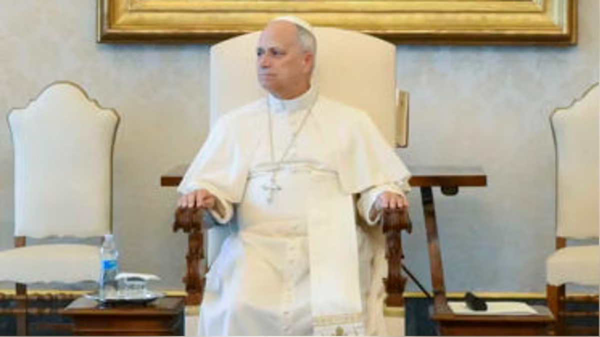

Conferencia Episcopal Peruana presentó el logo y el lema oficial de la visita del papa León XIV al Perú [FOTOS]Presentan el logo y el lema oficial de la visita de León XIV al Perú
La visita apostólica se realizará del 11 al 16 de noviembre e incluirá actividades y misas en seis regiones del país.